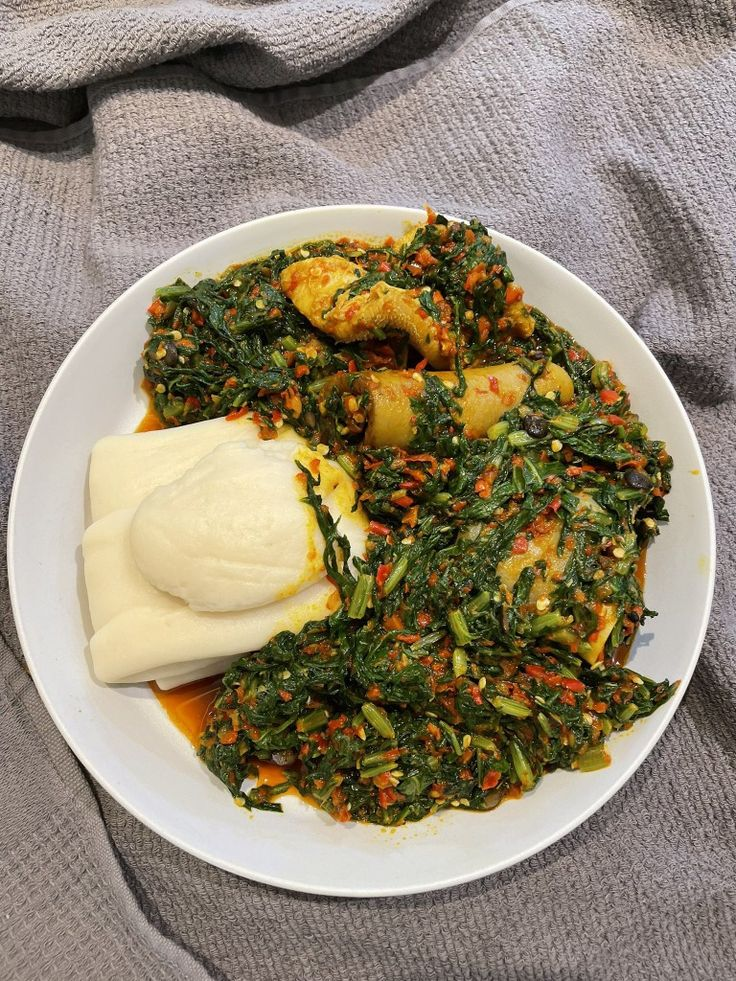

Egusi & iyan
Rich ground melon seed soup with goat meat, shaki and ponmo, served with a soft ball of iyan.
Order thisFreshly pounded yam for every occasion. Authentic taste, homemade goodness.
It’s not poundo, but pounded!
See the menu😋.jpg)

Every plate comes with iyan, pounded fresh.
Rich ground melon seed soup with goat meat, shaki and ponmo, served with a soft ball of iyan.
Order thisAlso available
Choose egusi, efo riro or any plate from the menu.
Call 705 923 1430 or send your order on WhatsApp.
Your iyan is pounded and packed fresh for you.